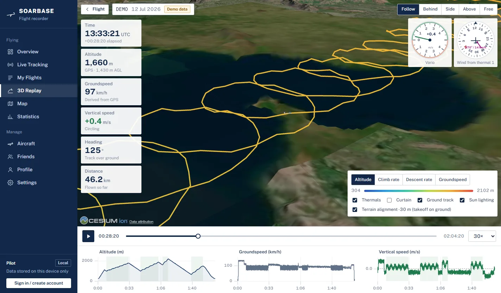
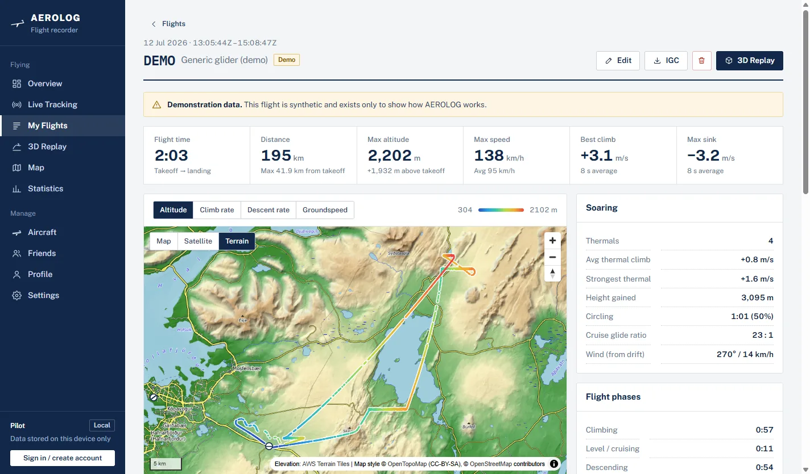
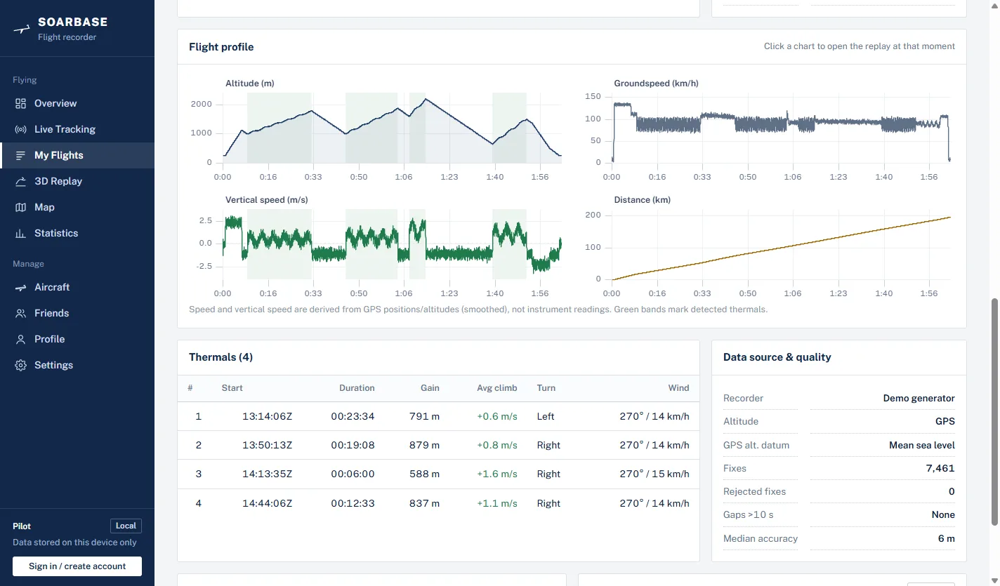
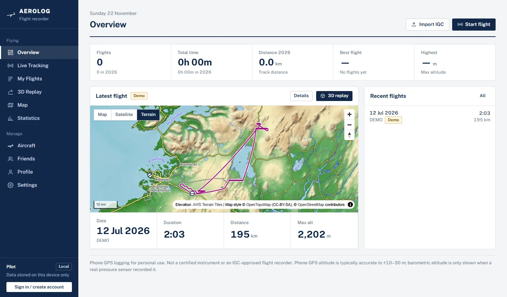
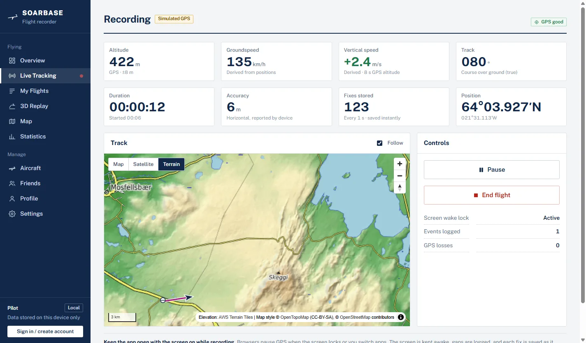

Logbook
Search, filter by aircraft or date, sort by duration or distance, add notes and photos, and export to CSV.
For glider, motor-glider and light-aircraft pilots
Import your IGC files or record with GPS, see every thermal and every glide, and replay the whole flight over real terrain. Then share it with the pilots you fly with.
You're on a phone. Soarbase runs on Windows PCs for now, so send yourself the link and download it on your computer. The phone app for recording flights is coming next.

3D replay
The glider follows your recorded track over real terrain, banking into every turn. Drag the timeline, or click any point on the charts, and everything jumps there together.
Flight analysis
Every flight is analysed the moment it's imported. GPS glitches and frozen fixes are filtered out first, so one bad point doesn't give you a 600 km/h top speed.


Everything in one place
Search, filter by aircraft or date, sort by duration or distance, add notes and photos, and export to CSV.
Drop in files from your logger. Duplicates are detected, and broken files get a clear message instead of a crash.
Keep your gliders and aeroplanes with photos and specs. Imported flights link to the right aircraft by registration.
Topographic, satellite and street maps with hillshading and optional 3D terrain. See every flight you've logged on one map.
Hours per month, totals per aircraft, and personal records for distance, duration, altitude and strongest thermal.
Record with GPS, with live altitude, speed, vario and track. Every fix is saved instantly, so a crash loses nothing.
Friends
Create a free account and add the pilots you fly with. Open their shared flights with all the same stats and the full 3D replay, and compare how you each worked the same day.
Every flight is private until you share it. Friends can view your shared flights but never edit or delete them, and nobody can find you in pilot search unless you turn that on.


Live tracking
The recorder shows altitude, groundspeed, vertical speed, track and GPS accuracy as you fly. It logs any gaps in the GPS signal, and if the app is closed mid-flight, it offers to resume or save when you reopen it.
On a PC you can try it with the built-in simulated GPS. A phone app that keeps recording with the screen locked is coming next.
Pricing
Everything Soarbase does today is free, and it stays free. Premium adds features for pilots who fly a lot, fly together, or fly competitively.
€0 forever
Available now
€4.99 / month
or €39 / year (save 35%) · planned price
Questions
Yes. Everything in the app today is free, including the account, friends and sharing. Premium will add extra features on top; nothing you use now will move behind it.
Premium isn't available yet, and nobody can be charged for it. Leave your email under Pricing and we'll let you know when it launches.
This website works on any phone, but the app itself runs on Windows PCs for now. A phone app for iPhone and Android that records flights with the screen locked is the next step.
Yes. Soarbase isn't code-signed yet, so Windows SmartScreen warns about it the first time. Click More info, then Run anyway.
No. It's a single file: double-click it and it runs. Keep it wherever you like, such as your Desktop or a USB stick.
No. Choose “Continue on this device only” and everything stays on your computer. You only need an account for friends and sharing, and your existing flights upload when you sign in.
Your logbook, statistics and analysis work offline. Maps, satellite imagery and terrain for the 3D replay are downloaded while you view them, and syncing with friends needs a connection.
No. Soarbase is a personal logbook and analysis tool, not a certified instrument or IGC-approved flight recorder. It can read your approved logger's IGC files, but files it records itself are marked as unapproved.
Soarbase currently runs on Windows only.
Download Soarbase, import an IGC file, and watch it again in 3D.